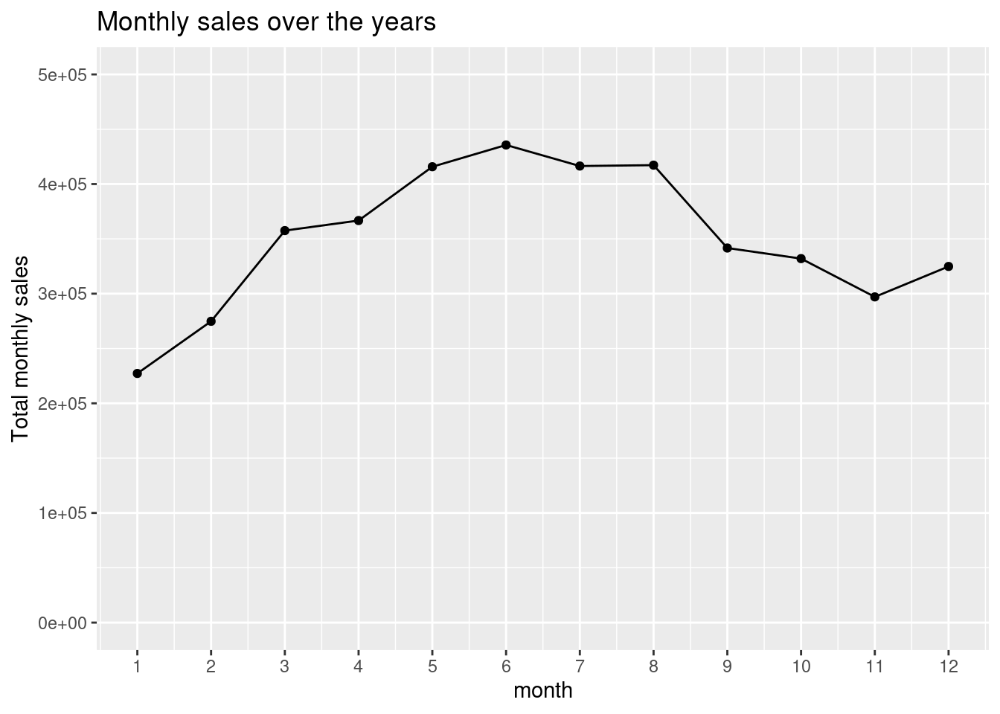
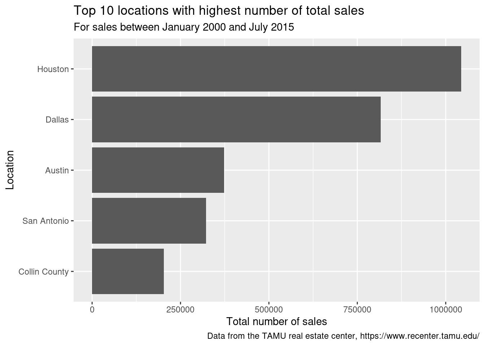

10 Grammar Data Wrangling
10.1 Learning objectives
- Understand the importance of data wrangling to prepare datasets for analysis.
- Manipulate a dataset to explore its structure.
- Start summarizing data.
In this worksheet, we will discuss the six core dplyr functions to manipulate our data. Start your workflow by uploading the tidyverse package which contains the dplyr functions:
We will consider a built-in dataset, txhousing, which contains information about the housing market in Texas. Run ?txhousing in your console for more details and take a look at the dataset:
What does one row in this dataset represent?
One row represents the information about the real estate market for a specific city, year, and month.
Looking at the documentation with ?txhousing, we are told that the information about the housing market in Texas was provided by the TAMU real estate center. The variables are defined as follows:
| Variables | Description |
|---|---|
city |
Name of multiple listing service (MLS) area |
year, month |
Year, Month for the housing market data |
sales |
Number of sales |
volume |
Total value of sales |
median |
Median sale price |
listings |
Total active listings |
inventory |
Amount of time (in months) it would take to sell all current listings at current pace of sales |
date |
Date for the housing market data (year + month / 12) |
Take a look at general summary statistics with summary():
## city year month
## Length:8602 Min. :2000 Min. : 1.000
## Class :character 1st Qu.:2003 1st Qu.: 3.000
## Mode :character Median :2007 Median : 6.000
## Mean :2007 Mean : 6.406
## 3rd Qu.:2011 3rd Qu.: 9.000
## sales volume median
## Min. : 6.0 Min. :8.350e+05 Min. : 50000
## 1st Qu.: 86.0 1st Qu.:1.084e+07 1st Qu.:100000
## Median : 169.0 Median :2.299e+07 Median :123800
## Mean : 549.6 Mean :1.069e+08 Mean :128131
## 3rd Qu.: 467.0 3rd Qu.:7.512e+07 3rd Qu.:150000
## listings inventory date
## Min. : 0 Min. : 0.000 Min. :2000
## 1st Qu.: 682 1st Qu.: 4.900 1st Qu.:2004
## Median : 1283 Median : 6.200 Median :2008
## Mean : 3217 Mean : 7.175 Mean :2008
## 3rd Qu.: 2954 3rd Qu.: 8.150 3rd Qu.:2012
## [ reached getOption("max.print") -- omitted 2 rows ]Anything you notice or wonder about?
The data include years 2000-2015. There are some missing values for the variables containing real estate information.
Let’s manipulate this dataset, with the 6 core dplyr functions, including some we already know!
10.2 1. Operations on rows/observations
10.2.1 a. Filter
Use filter() to choose rows/observations verifying some conditions:
Add more than one condition:
# Filter with multiple criteria
txhousing |>
filter(city == "Austin", sales <= 1000)
# or using connectors
txhousing |>
filter(city == "Austin" & sales <= 1000)We can check the number of rows that satisfy the conditions by pipping into nrow():
txhousing |>
# Filter with multiple criteria
filter(city == "Austin", sales <= 1000) |>
# Count the rows
nrow()## [1] 2Only 2 rows satisfied these conditions!
10.2.2 b. Arrange
Use arrange() to sort rows/observations for some variables Default is ascending (from least to greatest or alphabetically for categories) but to sort in the other direction use desc().
10.2.3 c. Minimum/Maximum values
Only keep the maximum/minimum values for some variables with slice_max()/slice_min().
# Select rows with maximum values for a variable
txhousing |>
# Use `slice_max(number of rows, variables)`
slice_max(n = 4, sales)# Select rows with minimum values for a variable
txhousing |>
# Use `slice_min(number of rows, variables)`
slice_min(n = 4, sales)Why do you think we get more than 4 rows?
Because the values of sales repeat. To have the 4 lowest values of sales, we need to include any repeats.
10.2.3.1 Try it! When were the lowest 5 numbers of sales for Austin? Display them in chronological order. Anything you notice about the dates?
txhousing |>
# focus on Austin
filter(city == "Austin") |>
# minimum values
slice_min(n = 5, sales) |>
# in chronological order
arrange(date)The lowest number of sales occurred in different years but always in January.
10.3 2. Operations on columns
10.3.1 a. Select
Use select() to keep or rename a subset of columns/variables.
10.3.2 b. Mutate
Use mutate() to create new columns/variables:
10.3.2.1 Try it! Calculate the difference between the average price as calculated above and the median sale price. Are these two measures the same? Why/Why not?
txhousing |>
# Only keep variables of interest
select(city,year,month,sales,volume,median) |>
# Create the average variable then find the difference
mutate(mean_price = volume/sales,
diff = mean_price - median) |>
filter(diff == 0)There are only 3 instances for which the median and mean are the same. They are usually not the same because the distribution of housing prices tend to be skewed actually.
10.4 3. Create summaries
10.4.1 a. Summarize
Use summarize() (or summarise() in British!) to calculate summary statistics on columns/variables. Some useful summary functions: mean(), sd(), median(), IQR(), min(), max(), n(), n_distinct(), cor(), …
# Find the mean number of sales
txhousing |>
summarize(mean_sales = mean(sales, na.rm = T)) # ignore NA values# Add more summaries:
txhousing |>
summarize(
# the mean
mean_sales = mean(sales, na.rm = T),
# the median
median_sales = median(sales, na.rm = T),
# the number of rows
n_rows = n(),
# the number of distinct cities in the dataset
n_cities = n_distinct(city),
# the correlation between sales and median price
correlation = cor(sales, median, use = "complete.obs"))10.4.1.1 Try it! Find the total number of sales for Austin in 2009.
txhousing |>
# Focus on Austin in 2009
filter(city == "Austin", year == 2009) |>
# the total number of sales
summarize(sum_sales = sum(sales, na.rm = TRUE))In 2009, there were 20,747 sales in the Austin area.
What if we wanted to generate a similar report for each year across all cities in txhousing? Let’s use a function that allows us to create summaries per subgroup.
10.4.2 b. Group by
This is one very important function! It enables us to create subgroups and apply a function to all these subgroups For example, find summaries per city and per year:
# Find summaries by subgroups
txhousing |>
# Each year is a subgroup
group_by(year) |>
# Create summaries for each subgroup
summarize(total_sales = sum(sales, na.rm = TRUE), # total number of sales
nb_rows = n()) # count how many rows in each subset Note that there are less rows in 2015. How could it influence the total number of sales during that year?
The number of sales is not representative of the whole year of 2015, probably less than usual.
Let’s try to be a little more specific and find the total number of sales per year and per month:
# Find summaries by subgroups
txhousing |>
# Each year/month is a subgroup
group_by(year, month) |>
# Create summaries for each subgroup
summarize(total_sales = sum(sales, na.rm = TRUE), # total number of sales
nb_rows = n()) # count how many rows: what does this number correspond to?10.4.2.1 Try it! Find the total number of sales per month across all cities in txhousing, but ignoring values from 2015 since there are not complete. Then create a ggplot to show how the number of sales may vary per month.
# Let's add a ggplot after using some of the dplyr functions above!
txhousing |>
filter(year != 2015) |>
group_by(month) |>
summarize(total_sales = sum(sales, na.rm = TRUE)) |>
# Add a ggplot
ggplot(aes(x = month, y = total_sales)) +
# with points and a line
geom_point() + geom_line() +
# Change the scale to show each month
scale_x_continuous(breaks = seq(1,12,1)) +
scale_y_continuous(limits = c(0,500000)) +
# Add some labels
labs(y = "Total monthly sales",
title = "Monthly sales over the years")
Looks like most sales typically happen in the summer!
One more example with a plot! Put comments to describe what each line of code does and add a title and labels:
txhousing |>
# for each city
group_by(city) |>
# calculate the total number of sales
summarize(total_sales = sum(sales, na.rm = TRUE)) |>
# only keep the 10 cities with the highest numbers of sales
slice_max(n = 5, total_sales) |>
# make a plot with the cities reordered depending on the number of total sales
ggplot(aes(y = fct_reorder(city, total_sales), x = total_sales)) +
# use bars representing that one number of total_sales
geom_bar(stat = "identity") +
# adjust title and labels
labs(x = "Total number of sales", y = "Location",
title = "Top 10 locations with highest number of total sales",
subtitle = "For sales between January 2000 and July 2015",
caption = "Data from the TAMU real estate center, https://www.recenter.tamu.edu/")
Note that group_by is not just use to create summaries but that’s its most common use.
10.5 Recommended Resources
- Worksheet keys are posted at the end of the week on Canvas under Programming Tools.
- Recommended readings: Data transformation
- More practie with
dplyrand cheat sheets: A Grammar of Data Manipulation